Lab 3: Keypad Input with Finite State Machines
Introduction
In this lab, a debounced, single-registration keypad reader was implemented on the UPduino v3.1 FPGA, reusing the 4x4 matrix keypad, 2N3904/2N3906 transistor drivers, and dual seven-segment display wired for Lab 2. Rather than continuously reading the scanned keypad columns onto LEDs, this lab synchronizes the asynchronous keypad inputs, debounces the mechanical switch bounce inherent to the keypad, and uses a finite state machine to register each keypress exactly once regardless of how long the key is held. The dual seven-segment display, reused unchanged from Lab 2, shows the last two hexadecimal digits pressed.
Design and Testing Methodology
FPGA Implementation
| Name | Type | Description | ||
|---|---|---|---|---|
| clk | internal | 24 MHz internal oscillator (HSOSC) |
||
| reset | input | Active low | ||
| cols[3:0] | input | Keypad columns, externally pulled up | ||
| rows[3:0] | output | Scan pattern to rows | ||
| active | output | Digit 1 | ||
| inactive | output | Digit 2 | ||
| seg[6:0] | output | Common Anode |
FSM Partitioning
The design is split into a single, small control FSM (keypadFSM) and a set of datapath blocks that it coordinates. The FSM decides when things happen, and the datapath blocks do the counting, decoding, and storing:
| Signal | From | To | Purpose |
|---|---|---|---|
anyKey, oneKey |
keyDecoder |
keypadFSM |
At least one / exactly one column is low on the active row |
sameKey |
comparator (sNew == s2) |
keypadFSM |
The decoded key matches the most recently stored digit |
scanEn |
keypadFSM |
scanning |
Lets the row scanner advance; freezes it on the active row while a key is down |
dbClear |
keypadFSM |
debounceTimer |
Holds the timer at zero outside of DEBOUNCE |
dbDone |
debounceTimer |
keypadFSM |
The key has been stable for the full debounce period |
newKey |
keypadFSM |
digitRegister |
One-cycle enable that shifts the new digit in |
The scanner, debounce timer, and display multiplexer are all instances of the same parameterized counter, so the only custom sequential control logic is the three-state FSM. The display multiplexer runs freely and does not talk to the FSM at all, so the display keeps refreshing no matter what the keypad is doing.
The alternative would be a single monolithic FSM that also encodes the row being scanned and the debounce count in its state, e.g. separate IDLE/DEBOUNCE/HOLD states for each of the four rows. That removes the handshake signals between modules, but it multiplies the number of states and transitions, making the state transition diagram much harder to specify completely and verify. Another option is to split scanning and debouncing into two communicating FSMs. That is more modular, but it adds a handshake between two state machines and more ways for them to fall out of sync. Keeping one small FSM with counter-based helpers made each piece easy to test on its own (see the testbench results below). The cost is a few extra inter-module signals and a Mealy output (newKey) that depends combinationally on dbDone. Every consumer of that output is synchronous, so combinational glitches never get registered.
Switch Debouncing Strategy
The keypad columns are first passed through a two-flop synchronizer to resolve metastability, since key presses are asynchronous to the 24 MHz clock. Debouncing is then done with a stable-for-a-period strategy:
- When exactly one key is detected in IDLE, the FSM freezes the scanner on that row (
scanEn = 0) and moves to DEBOUNCE, releasingdbClearso thedebounceTimerstarts counting. - The key must stay continuously pressed (
oneKey) for 480,000 clock cycles (20 ms at 24 MHz). If it bounces open at any point, the FSM returns to IDLE and the timer is cleared, so the next contact restarts the full 20 ms count. - Only when
dbDonearrives while the key is still pressed does the FSM pulsenewKeyand move to HOLD, where it waits for the key to be released. A held key is therefore registered exactly once.
Release bounce is handled implicitly: the FSM drops from HOLD to IDLE as soon as the key opens, but any bounce that looks like a new press has to survive another full 20 ms in DEBOUNCE before it counts, which bounce never does.
Other approaches considered:
- Register immediately, then ignore input for a lockout period. This has almost no latency, but a single noise glitch registers as a keypress. The chosen method only accepts a key after it has been proven stable.
- Slow sampling (e.g. only sampling the keypad every 20 ms). This is simple and cheap, but a press can be sampled mid-bounce, and response time varies by up to a full sample period.
- Shift-register or saturating up/down integrator per column. This is robust to noise, but needs per-column state and more logic. The FSM approach shares one timer across the whole keypad because only one key is being debounced at a time.
- Analog RC filter with a Schmitt trigger. This takes no FPGA logic, but it needs extra components on every column and the time constant is fixed in hardware.
The tradeoff of the chosen approach is a fixed 20 ms latency before a press is registered, which is imperceptible to a user, plus a 19-bit counter.
Technical Documentation:
The source code for the project can be found in the associated Github Repo.
Block Diagram
Lab 3 Block Diagram // Joaquin Gonzalez-Salgado // September 21 2026
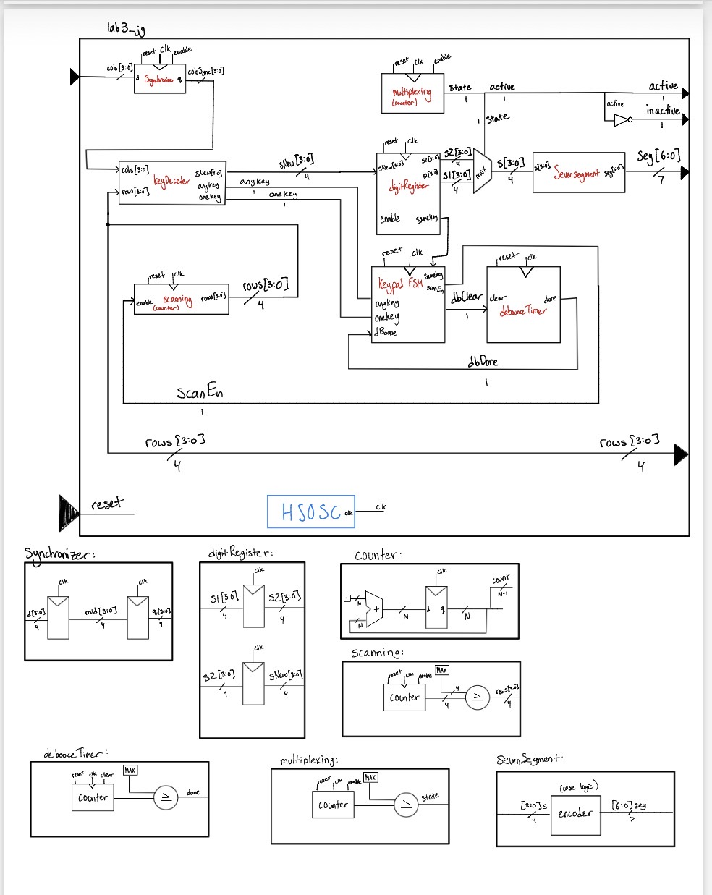
lab3_jg, showing the synchronizer, key decoder, keypad FSM, debounce timer, digit register, scanning and multiplexing counters, and seven-segment decoder, with each submodule’s internals shown below.
State Transition Diagram
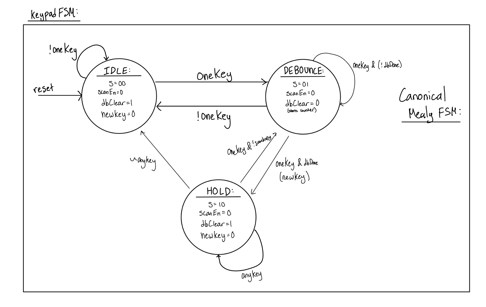
State Transition Table
| State | Encoding |
|---|---|
| IDLE | 00 |
| DEBOUNCE | 01 |
| HOLD | 10 |
| unused | 11 → IDLE |
| Current State | Inputs | Next State | scanEn |
dbClear |
newKey |
|---|---|---|---|---|---|
| IDLE | !anyKey |
IDLE | 1 | 1 | 0 |
| IDLE | anyKey & !oneKey (multiple keys) |
IDLE | 0 | 1 | 0 |
| IDLE | oneKey |
DEBOUNCE | 0 | 1 | 0 |
| DEBOUNCE | !oneKey |
IDLE | 0 | 0 | 0 |
| DEBOUNCE | oneKey & !dbDone |
DEBOUNCE | 0 | 0 | 0 |
| DEBOUNCE | oneKey & dbDone |
HOLD | 0 | 0 | 1 |
| HOLD | !anyKey |
IDLE | 0 | 1 | 0 |
| HOLD | oneKey & !sameKey |
DEBOUNCE | 0 | 1 | 0 |
| HOLD | anyKey & !(oneKey & !sameKey) |
HOLD | 0 | 1 | 0 |
11 |
— | IDLE | 0 | 1 | 0 |
The outputs are:
scanEn = (state == IDLE) & !anyKeydbClear = (state != DEBOUNCE)newKey = (state == DEBOUNCE) & oneKey & dbDone
scanEn and newKey depend on the inputs, which makes this a Mealy machine. The HOLD → DEBOUNCE transition handles key rollover: if a second key is held and the first is released, the new key is debounced and registered without all keys having to be released first.
Synthesis Results
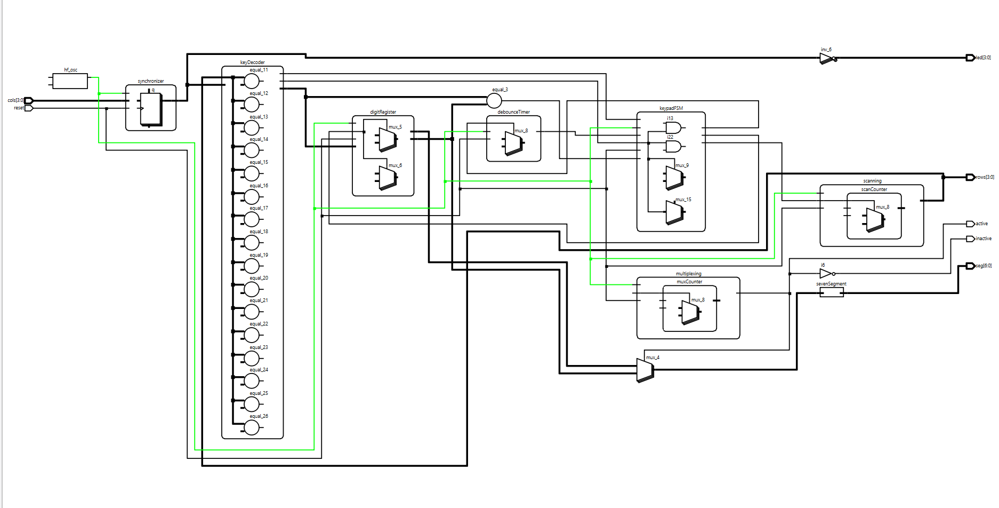
lab3_jg, showing the synchronizer, key decoder, digit register, debounce timer, keypad FSM, scanning and multiplexing counters, and seven-segment decoder.
The synthesized netlist in Figure 3 contains only flip-flops, multiplexers, comparators, and logic gates. No latches or tristate buffers were inferred: every always_comb block assigns its outputs on all paths, and no signal is ever driven to z.
Schematic
Lab 3 Wiring Schematic // Joaquin Gonzalez-Salgado // September 21 2026
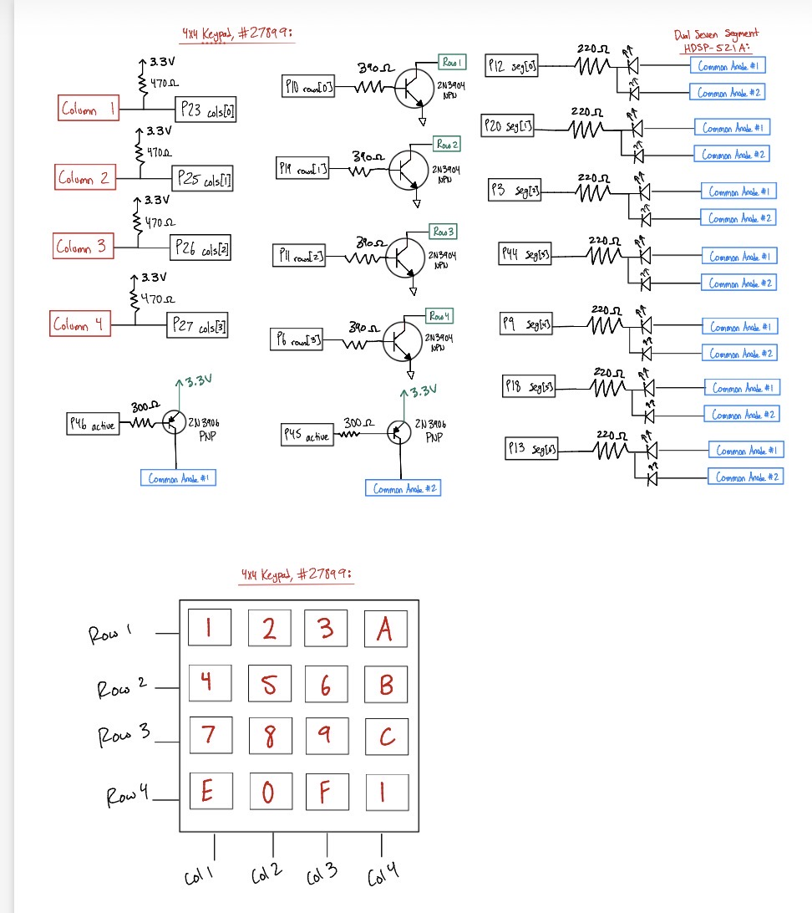
Results and Discussion
The Design was a Success!
Everything works as intended! The keypad is correctly debounced and synchronized, each keypress is registered exactly once regardless of how long the key is held, and the dual seven-segment display correctly shows the last two hexadecimal digits pressed.
Testbench Simulation
Top Level (lab3)
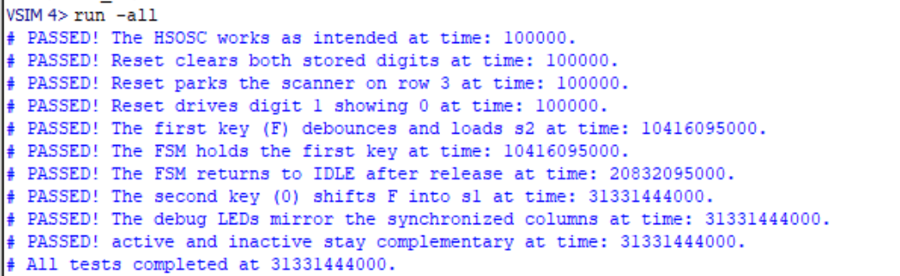
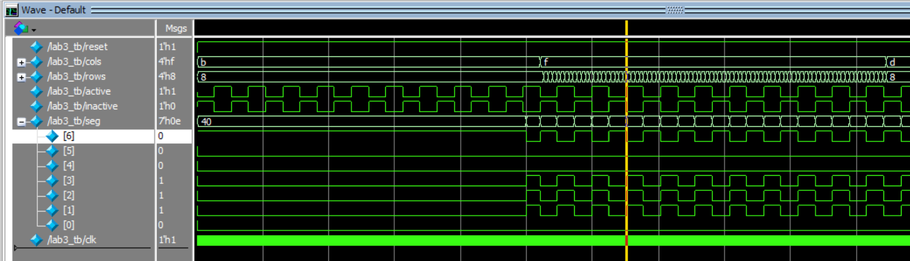
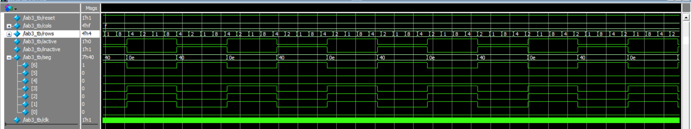
40 and 0e) as active and inactive toggle.
Keypad FSM (keypadFSM)
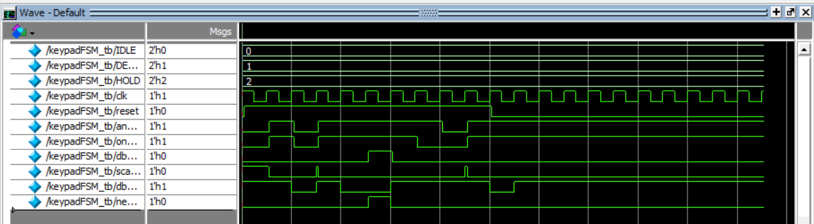
newKey pulse per press.
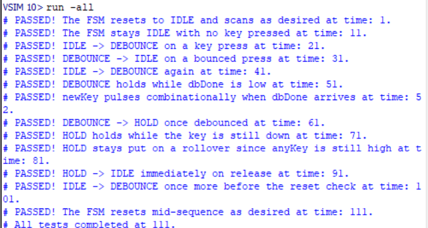
Digit Register (digitRegister)
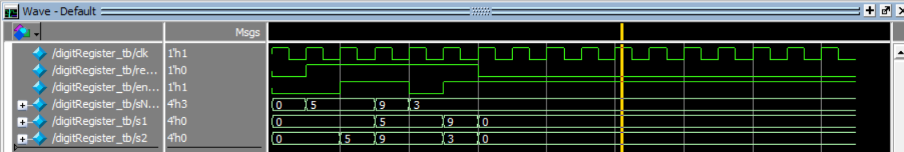
s2 and shifting the previous digit into s1.
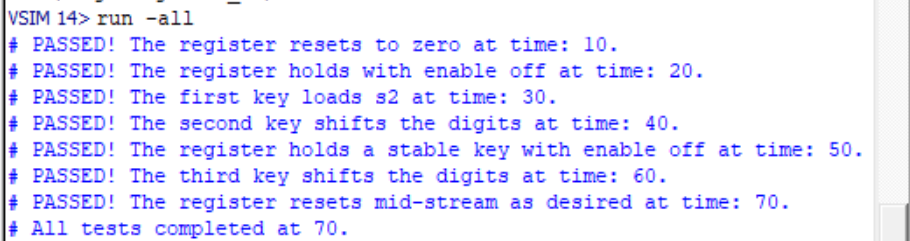
Key Decoder (keyDecoder)
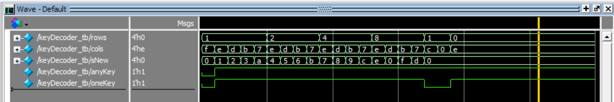
anyKey and oneKey flags.
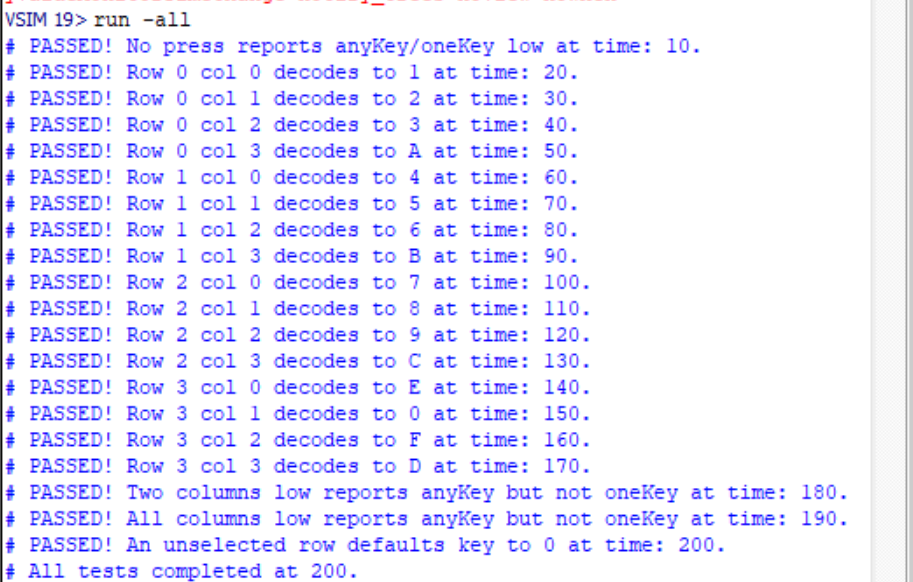
anyKey/oneKey behavior for multiple-key presses.
Debounce Timer (debounceTimer)
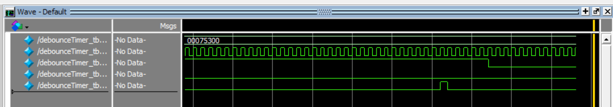
done pulse after the timer expires.
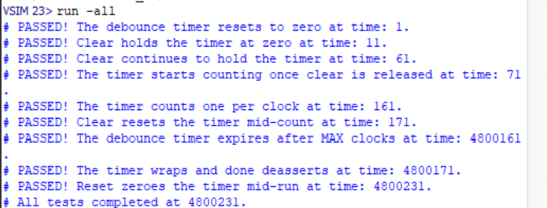
Synchronizer (synchronizer)
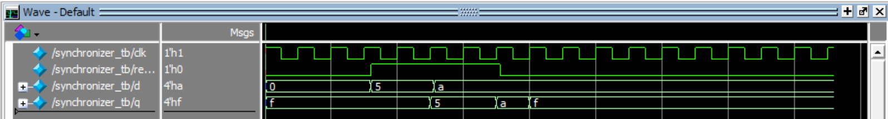
d reaching q after two clock edges.
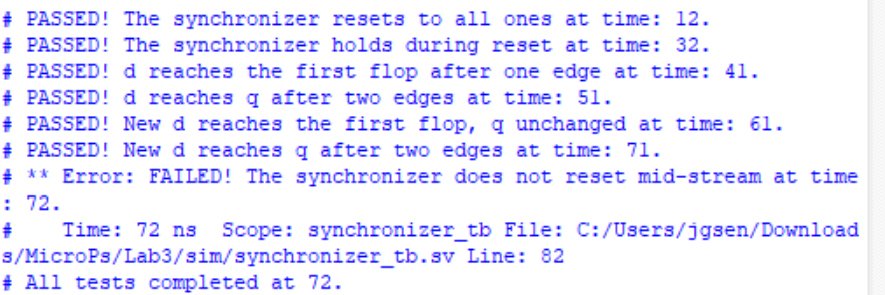
Testbenches were written for the top-level module and each submodule. All asserts passed.
Conclusion
This lab built on the display and keypad hardware from Lab 2 by adding synchronization, debouncing, and a finite state machine to turn raw, bouncy switch contacts into a single clean event per keypress. Reusing the Lab 2 scanning, decoder, and multiplexing logic kept the new HDL focused on the FSM and debounce logic, and demonstrated how a fully synchronous design with strobed enables avoids the metastability and glitching problems that come with asynchronous keypad inputs.
This lab took 23 hours.
AI Prototype Summary
Prompt: Target device: Lattice iCE40 UP5K FPGA with internal high-speed oscillator (~20 MHz).
Write synthesizable SystemVerilog to scan a 4x4 matrix keypad and display the last two hex keys pressed on a dual 7‑segment display. Implement:
A clock divider that derives a scan clock on the order of 100–200 Hz from the internal oscillator. A keypad scanning controller that iterates one active‑low column at a time and samples active‑low rows, registering at most one key per press (debounce‑by‑design), ignoring additional presses while any key is held, and allowing a new registration only after release. A top level that updates two hex digits (older and most recent) when a new key is registered and drives a time‑multiplexed two‑digit 7‑segment display without visible flicker and with balanced brightness. Use idiomatic SystemVerilog (e.g., logic, always_ff, enumerated states for FSMs). Provide clean module boundaries and keep all state synchronous. Include brief comments explaining the design choices.
Create a new Radiant project, type the code generated by the LLM in and analyze the results. If the synthesis fails, type the error message back into the LLM to see what suggestions it generates.
// ============================================================================
// 4x4 Matrix Keypad -> Last Two Hex Keys -> Dual 7-Segment Display
//
// Target: Lattice iCE40 UP5K
// Clock : ~20 MHz
//
// Keypad:
// row[3:0] : active-low row drive
// col[3:0] : active-low column inputs
//
// Display:
// seg[6:0] : {g,f,e,d,c,b,a}, active-low
// digit[1:0] : active-low digit enables
//
// Key mapping:
// 1 2 3 A
// 4 5 6 B
// 7 8 9 C
// E 0 F D
//
// ============================================================================
module keypad_hex_top #(
parameter int CLK_HZ = 20_000_000,
// Keypad scan frequency. 100 Hz means each row is visited at 100 Hz.
// A complete 4-row scan therefore takes 40 ms.
parameter int SCAN_HZ = 100,
// Number of identical complete scans required before accepting a
// changed key state. 3 scans ~= 120 ms with SCAN_HZ=100.
parameter int DEBOUNCE_SCANS = 3,
// Display multiplexing frequency per digit.
parameter int DISP_HZ = 1000
) (
input logic clk,
input logic [3:0] key_col,
output logic [3:0] key_row,
output logic [6:0] seg,
output logic [1:0] digit
);
// ------------------------------------------------------------------------
// Clock enables
// ------------------------------------------------------------------------
logic scan_ce;
logic disp_ce;
clock_divider #(
.CLK_HZ (CLK_HZ),
.OUT_HZ (SCAN_HZ * 4)
) u_scan_clock (
.clk (clk),
.ce (scan_ce)
);
clock_divider #(
.CLK_HZ (CLK_HZ),
.OUT_HZ (DISP_HZ * 2)
) u_display_clock (
.clk (clk),
.ce (disp_ce)
);
// ------------------------------------------------------------------------
// Keypad scanner
// ------------------------------------------------------------------------
logic [3:0] key_event;
logic key_valid;
keypad_scanner #(
.DEBOUNCE_SCANS (DEBOUNCE_SCANS)
) u_keypad (
.clk (clk),
.scan_ce (scan_ce),
.key_col (key_col),
.key_row (key_row),
.key_event (key_event),
.key_valid (key_valid)
);
// ------------------------------------------------------------------------
// Remember last two keys
// ------------------------------------------------------------------------
logic [3:0] key_previous;
logic [3:0] key_latest;
always_ff @(posedge clk) begin
if (key_valid) begin
key_previous <= key_latest;
key_latest <= key_event;
end
end
// ------------------------------------------------------------------------
// Multiplexed seven-segment display
// ------------------------------------------------------------------------
seven_seg_mux u_display (
.clk (clk),
.disp_ce (disp_ce),
.left_nibble (key_previous),
.right_nibble (key_latest),
.seg (seg),
.digit (digit)
);
endmodule
// ============================================================================
// Clock divider producing a one-clock-cycle clock-enable pulse.
//
// OUT_HZ is the requested enable frequency, not a generated clock.
// ============================================================================
module clock_divider #(
parameter int CLK_HZ = 20_000_000,
parameter int OUT_HZ = 400
) (
input logic clk,
output logic ce
);
localparam int DIVISOR = CLK_HZ / OUT_HZ;
localparam int CNT_W = (DIVISOR <= 2) ? 1 : $clog2(DIVISOR);
logic [CNT_W-1:0] count;
initial begin
if (OUT_HZ <= 0)
$error("OUT_HZ must be greater than zero");
if (DIVISOR < 1)
$error("OUT_HZ must not exceed CLK_HZ");
end
always_ff @(posedge clk) begin
ce <= 1'b0;
if (count == DIVISOR-1) begin
count <= '0;
ce <= 1'b1;
end
else begin
count <= count + 1'b1;
end
end
endmodule
// ============================================================================
// 4x4 keypad scanner
//
// The scanner drives exactly one row low at a time.
//
// scan_ce occurs at SCAN_HZ * 4, so:
//
// row 0 -> row 1 -> row 2 -> row 3 -> row 0 ...
//
// At the end of row 3, a complete scan has been collected.
//
// Debounce strategy:
// 1. Scan all four rows.
// 2. Decode the complete 4x4 state.
// 3. Require that state to be identical for DEBOUNCE_SCANS scans.
// 4. Generate one key_valid pulse when a new stable key appears.
//
// This deliberately reports a key once per press, rather than repeatedly
// while the key is held.
//
// ============================================================================
module keypad_scanner #(
parameter int DEBOUNCE_SCANS = 3
) (
input logic clk,
input logic scan_ce,
input logic [3:0] key_col,
output logic [3:0] key_row,
output logic [3:0] key_event,
output logic key_valid
);
// Synchronize asynchronous keypad inputs to the FPGA clock.
logic [3:0] col_meta;
logic [3:0] col_sync;
always_ff @(posedge clk) begin
col_meta <= key_col;
col_sync <= col_meta;
end
// Row index.
logic [1:0] row_index;
// Store the result from each row until the entire scan is complete.
logic [3:0] row_sample [0:3];
// Candidate and stable states.
//
// A 17-bit representation is used:
// bit 16 = "some key pressed"
// bits 15:12 = row
// bits 11:8 = column
// remaining bits unused
//
// For simplicity, internally we instead use a 5-bit key code:
//
// 0..15 = actual key
// 16 = no key
//
localparam logic [4:0] NO_KEY = 5'd16;
logic [4:0] candidate_key;
logic [4:0] stable_key;
localparam int DB_W =
(DEBOUNCE_SCANS <= 1) ? 1 : $clog2(DEBOUNCE_SCANS + 1);
logic [DB_W-1:0] debounce_count;
// Drive one row low at a time.
always_comb begin
key_row = 4'b1111;
case (row_index)
2'd0: key_row[0] = 1'b0;
2'd1: key_row[1] = 1'b0;
2'd2: key_row[2] = 1'b0;
2'd3: key_row[3] = 1'b0;
endcase
end
// Decode a complete keypad state.
//
// row_sample[r][c] == 1 means that column was low while row r
// was selected.
function automatic logic [4:0] decode_key(
input logic [3:0] r0,
input logic [3:0] r1,
input logic [3:0] r2,
input logic [3:0] r3
);
begin
decode_key = NO_KEY;
// Row 0: 1 2 3 A
if (r0[0]) decode_key = 5'd1;
else if (r0[1]) decode_key = 5'd2;
else if (r0[2]) decode_key = 5'd3;
else if (r0[3]) decode_key = 5'd10;
// Row 1: 4 5 6 B
else if (r1[0]) decode_key = 5'd4;
else if (r1[1]) decode_key = 5'd5;
else if (r1[2]) decode_key = 5'd6;
else if (r1[3]) decode_key = 5'd11;
// Row 2: 7 8 9 C
else if (r2[0]) decode_key = 5'd7;
else if (r2[1]) decode_key = 5'd8;
else if (r2[2]) decode_key = 5'd9;
else if (r2[3]) decode_key = 5'd12;
// Row 3: E 0 F D
else if (r3[0]) decode_key = 5'd14;
else if (r3[1]) decode_key = 5'd0;
else if (r3[2]) decode_key = 5'd15;
else if (r3[3]) decode_key = 5'd13;
end
endfunction
logic [4:0] scanned_key;
always_comb begin
// A column is active-low, so invert the synchronized inputs.
scanned_key = decode_key(
~row_sample[0],
~row_sample[1],
~row_sample[2],
~row_sample[3]
);
end
// Scan and debounce state machine.
always_ff @(posedge clk) begin
key_valid <= 1'b0;
if (scan_ce) begin
// Capture the columns belonging to the currently active row.
row_sample[row_index] <= col_sync;
if (row_index == 2'd3) begin
// This completes a four-row scan.
//
// Because row_sample[3] is being written on this same
// clock edge, construct the decoded state explicitly
// using col_sync for row 3.
scanned_key = decode_key(
~row_sample[0],
~row_sample[1],
~row_sample[2],
~col_sync
);
if (scanned_key == candidate_key) begin
if (debounce_count < DEBOUNCE_SCANS) begin
debounce_count <= debounce_count + 1'b1;
end
// Candidate has remained unchanged for the requested
// number of complete scans.
if ((debounce_count >= DEBOUNCE_SCANS-1) &&
(stable_key != candidate_key)) begin
stable_key <= candidate_key;
// Only generate a key event for an actual key,
// not for the transition to NO_KEY.
if (candidate_key != NO_KEY) begin
key_event <= candidate_key[3:0];
key_valid <= 1'b1;
end
end
end
else begin
// New candidate state.
candidate_key <= scanned_key;
debounce_count <= '0;
end
// Begin another complete scan.
row_index <= 2'd0;
end
else begin
row_index <= row_index + 1'b1;
end
end
end
initial begin
if (DEBOUNCE_SCANS < 1)
$error("DEBOUNCE_SCANS must be >= 1");
end
endmodule
// ============================================================================
// Dual 7-segment multiplexing driver
//
// seg[6:0] = {g,f,e,d,c,b,a}
//
// Active-low segments and active-low digit enables are assumed.
//
// left_nibble -> left display digit
// right_nibble -> right display digit
// ============================================================================
module seven_seg_mux (
input logic clk,
input logic disp_ce,
input logic [3:0] left_nibble,
input logic [3:0] right_nibble,
output logic [6:0] seg,
output logic [1:0] digit
);
logic display_select;
function automatic logic [6:0] hex_to_7seg(
input logic [3:0] value
);
begin
case (value)
4'h0: hex_to_7seg = 7'b1000000;
4'h1: hex_to_7seg = 7'b1111001;
4'h2: hex_to_7seg = 7'b0100100;
4'h3: hex_to_7seg = 7'b0110000;
4'h4: hex_to_7seg = 7'b0011001;
4'h5: hex_to_7seg = 7'b0010010;
4'h6: hex_to_7seg = 7'b0000010;
4'h7: hex_to_7seg = 7'b1111000;
4'h8: hex_to_7seg = 7'b0000000;
4'h9: hex_to_7seg = 7'b0010000;
4'hA: hex_to_7seg = 7'b0001000;
4'hB: hex_to_7seg = 7'b0000011;
4'hC: hex_to_7seg = 7'b1000110;
4'hD: hex_to_7seg = 7'b0100001;
4'hE: hex_to_7seg = 7'b0000110;
4'hF: hex_to_7seg = 7'b0001110;
default: hex_to_7seg = 7'b1111111;
endcase
end
endfunction
always_ff @(posedge clk) begin
if (disp_ce)
display_select <= ~display_select;
end
always_comb begin
// Disable both digits while changing the segment data.
// This also minimizes visible ghosting.
digit = 2'b11;
seg = 7'b1111111;
if (display_select == 1'b0) begin
seg = hex_to_7seg(left_nibble);
digit = 2'b10; // left digit ON
end
else begin
seg = hex_to_7seg(right_nibble);
digit = 2'b01; // right digit ON
end
end
endmoduleIn this variant, the LLM was prompted for the two main FSMs separately: (1) the one‑shot registration (debounce‑by‑design) behavior and (2) the keypad scanning controller. After generating those, a top‑level integration and display logic was requested.
Prompt 1 (One‑shot Registration, Debounce‑by‑design): Target device: Lattice iCE40 UP5K FPGA.
Overall Goal: Write SystemVerilog to scan a 4x4 matrix keypad and display the last two hex keys pressed on a dual 7 segment display.
Current Goal: Write a synthesizable SystemVerilog module that produces a one‑shot registration signal for the keypad system. Behavior:
When a key press is first detected, capture the current key code and assert a single‑cycle “new key” pulse. While any key remains pressed, do not accept additional keys. Only after keys are released should a subsequent press be recognized. This should handle debouncing of the keys. Implement as a small synchronous FSM with enumerated states and glitch‑free outputs. Keep names and interfaces reasonable; do not assume any hidden modules beyond what you define here.
Run this prompt within the same session to maintain the context of the above FSM.
Prompt 2 (Keypad Scanner Controller): Target device: Lattice iCE40 UP5K FPGA.
Write a synthesizable SystemVerilog module that cycles through keypad columns (active‑low, one at a time) and samples rows (active‑low) to detect a single key at a time. Behavior:
Iterate columns at a suitable scan rate derived from the divided clock and sample rows. When a key is detected, report a stable key code consistent with a standard 4x4 keypad layout and maintain it while the key remains pressed. Provide a boolean signal indicating whether any key is currently pressed. Use clean state encoding and synchronous logic; avoid combinational feedback and latches.
Prompt 3 (Integrate and Display): Target device: Lattice iCE40 UP5K FPGA with internal oscillator as the root clock source.
Write a top‑level SystemVerilog module that instantiates the scanner and one‑shot modules, shifts the last two keys (older ← most recent; most recent ← new), and drives a multiplexed two‑digit seven‑segment display. Requirements:
Update the displayed digits only when a new key is registered. Ensure equal apparent brightness and no visible flicker. Keep all logic synthesizable and synchronous; use idiomatic SystemVerilog constructs. Provide any small clock‑enable or divider logic you need. You can also assume that a sevenSegment module exists that takes a 4 bit input and outputs the 7 segments.
module key_one_shot #(
parameter int unsigned DEBOUNCE_CYCLES = 50_000
) (
input logic clk,
input logic rst_n,
input logic key_in,
output logic new_key
);
localparam int unsigned CNT_W =
(DEBOUNCE_CYCLES <= 1) ? 1 : $clog2(DEBOUNCE_CYCLES);
typedef enum logic [1:0] {
IDLE, // Waiting for a press
DEBOUNCE, // Verify that the press is stable
HELD, // Key is down; block further presses
RELEASE // Verify that the key has been released
} state_t;
state_t state;
logic [CNT_W-1:0] counter;
always_ff @(posedge clk or negedge rst_n) begin
if (!rst_n) begin
state <= IDLE;
counter <= '0;
new_key <= 1'b0;
end else begin
// Default: pulse is asserted for only one clock cycle.
new_key <= 1'b0;
case (state)
IDLE: begin
counter <= '0;
if (key_in) begin
state <= DEBOUNCE;
counter <= '0;
end
end
DEBOUNCE: begin
if (!key_in) begin
// Press was just switch bounce.
state <= IDLE;
counter <= '0;
end else if (DEBOUNCE_CYCLES <= 1 ||
counter == DEBOUNCE_CYCLES-1) begin
// Stable press confirmed.
new_key <= 1'b1;
state <= HELD;
counter <= '0;
end else begin
counter <= counter + 1'b1;
end
end
HELD: begin
// Ignore all input activity while the key is held.
counter <= '0;
if (!key_in) begin
state <= RELEASE;
counter <= '0;
end
end
RELEASE: begin
if (key_in) begin
// Release was bounce; remain locked out.
state <= HELD;
counter <= '0;
end else if (DEBOUNCE_CYCLES <= 1 ||
counter == DEBOUNCE_CYCLES-1) begin
// Stable release confirmed.
state <= IDLE;
counter <= '0;
end else begin
counter <= counter + 1'b1;
end
end
default: begin
state <= IDLE;
counter <= '0;
end
endcase
end
end
endmodulemodule keypad_scanner #(
parameter int CLK_FREQ_HZ = 50_000_000,
parameter int SCAN_RATE_HZ = 1000,
parameter int DEBOUNCE_SCANS = 5
) (
input logic clk,
input logic rst_n,
// Matrix keypad: columns are driven, rows are read.
output logic [3:0] col_n, // Active-low column outputs
input logic [3:0] row_n, // Active-low row inputs
// Key event output
output logic key_valid,
output logic [4:0] key_code,
output logic key_pressed
);
localparam int SCAN_DIV =
(CLK_FREQ_HZ / (SCAN_RATE_HZ * 4)) - 1;
localparam int DIV_W =
(SCAN_DIV < 1) ? 1 : $clog2(SCAN_DIV + 1);
localparam int DB_W =
(DEBOUNCE_SCANS < 2) ? 1 : $clog2(DEBOUNCE_SCANS + 1);
logic [DIV_W-1:0] scan_cnt;
logic [1:0] col_idx;
logic [15:0] stable_keys;
logic [15:0] sampled_keys;
logic [DB_W-1:0] debounce_cnt;
integer r;
integer k;
// One column is driven low; all other columns remain high.
always_comb begin
col_n = 4'b1111;
col_n[col_idx] = 1'b0;
end
// Convert the active row/column into a key code.
function automatic logic [4:0] make_key_code(
input logic [1:0] c,
input logic [1:0] r_idx
);
make_key_code = (c * 4) + r_idx;
endfunction
always_ff @(posedge clk or negedge rst_n) begin
if (!rst_n) begin
scan_cnt <= '0;
col_idx <= 2'd0;
stable_keys <= 16'b0;
sampled_keys <= 16'b0;
debounce_cnt <= '0;
key_valid <= 1'b0;
key_code <= 5'd0;
key_pressed <= 1'b0;
end
else begin
key_valid <= 1'b0;
if (scan_cnt == SCAN_DIV) begin
scan_cnt <= '0;
/*
* row_n is active-low, so invert it.
* Each scan samples the currently selected column.
*/
for (r = 0; r < 4; r = r + 1) begin
sampled_keys[(col_idx * 4) + r] <= ~row_n[r];
end
if (col_idx == 2'd3) begin
/*
* A complete 4-column scan has finished.
* Compare the newly sampled matrix with the
* previous stable state.
*/
if (sampled_keys == stable_keys) begin
debounce_cnt <= '0;
end
else if (debounce_cnt < DEBOUNCE_SCANS) begin
debounce_cnt <= debounce_cnt + 1'b1;
end
else begin
// Accept the new state after debounce.
for (k = 0; k < 16; k = k + 1) begin
if (sampled_keys[k] != stable_keys[k]) begin
key_valid <= 1'b1;
key_code <= k[4:0];
key_pressed <= sampled_keys[k];
end
end
stable_keys <= sampled_keys;
debounce_cnt <= '0;
end
end
col_idx <= col_idx + 1'b1;
end
else begin
scan_cnt <= scan_cnt + 1'b1;
end
end
end
endmodulemodule top (
input logic clk,
input logic rst_n,
// Key/input interface
input logic [3:0] key,
// 7-segment outputs
output logic [6:0] seg,
output logic [1:0] an
);
// ------------------------------------------------------------
// FSM signals
// ------------------------------------------------------------
logic [3:0] fsm1_key;
logic [3:0] fsm2_key;
logic fsm1_valid;
logic fsm2_valid;
// ------------------------------------------------------------
// Instantiate FSM #1
// Replace ports with those used by your FSM.
// ------------------------------------------------------------
fsm1 u_fsm1 (
.clk (clk),
.rst_n (rst_n),
.key (key),
.key_out (fsm1_key),
.valid (fsm1_valid)
);
// ------------------------------------------------------------
// Instantiate FSM #2
// Replace ports with those used by your FSM.
// ------------------------------------------------------------
fsm2 u_fsm2 (
.clk (clk),
.rst_n (rst_n),
.key (key),
.key_out (fsm2_key),
.valid (fsm2_valid)
);
// ------------------------------------------------------------
// Two-key shift register
//
// key_old = previously accepted key
// key_new = most recently accepted key
//
// A key is shifted whenever either FSM indicates a valid
// accepted key.
// ------------------------------------------------------------
logic [3:0] key_old;
logic [3:0] key_new;
logic [3:0] accepted_key;
logic accepted_valid;
always_comb begin
if (fsm2_valid) begin
accepted_key = fsm2_key;
accepted_valid = 1'b1;
end
else if (fsm1_valid) begin
accepted_key = fsm1_key;
accepted_valid = 1'b1;
end
else begin
accepted_key = 4'h0;
accepted_valid = 1'b0;
end
end
always_ff @(posedge clk or negedge rst_n) begin
if (!rst_n) begin
key_old <= 4'h0;
key_new <= 4'h0;
end
else if (accepted_valid) begin
key_old <= key_new;
key_new <= accepted_key;
end
end
// ------------------------------------------------------------
// Display refresh
//
// A relatively high refresh rate prevents visible flicker.
// For a 100 MHz clock, REFRESH_DIV=50000 gives:
//
// digit switching = 100 MHz / 50000 = 2 kHz
// each digit = 1 kHz
//
// Each digit therefore receives exactly 50% of the display
// enable time, giving equal brightness.
// ------------------------------------------------------------
localparam int REFRESH_DIV = 50_000;
localparam int DIV_W =
(REFRESH_DIV <= 2) ? 1 : $clog2(REFRESH_DIV);
logic [DIV_W-1:0] refresh_cnt;
logic digit_sel;
always_ff @(posedge clk or negedge rst_n) begin
if (!rst_n) begin
refresh_cnt <= '0;
digit_sel <= 1'b0;
end
else if (refresh_cnt == REFRESH_DIV-1) begin
refresh_cnt <= '0;
digit_sel <= ~digit_sel;
end
else begin
refresh_cnt <= refresh_cnt + 1'b1;
end
end
// ------------------------------------------------------------
// 7-segment decoder
//
// This example assumes:
// seg[6:0] = {a,b,c,d,e,f,g}
// active-low segments
//
// Change the patterns if your hardware is active-high.
// ------------------------------------------------------------
function automatic logic [6:0] hex_to_7seg(
input logic [3:0] value
);
case (value)
4'h0: hex_to_7seg = 7'b1000000;
4'h1: hex_to_7seg = 7'b1111001;
4'h2: hex_to_7seg = 7'b0100100;
4'h3: hex_to_7seg = 7'b0110000;
4'h4: hex_to_7seg = 7'b0011001;
4'h5: hex_to_7seg = 7'b0010010;
4'h6: hex_to_7seg = 7'b0000010;
4'h7: hex_to_7seg = 7'b1111000;
4'h8: hex_to_7seg = 7'b0000000;
4'h9: hex_to_7seg = 7'b0010000;
4'hA: hex_to_7seg = 7'b0001000;
4'hB: hex_to_7seg = 7'b0000011;
4'hC: hex_to_7seg = 7'b1000110;
4'hD: hex_to_7seg = 7'b0100001;
4'hE: hex_to_7seg = 7'b0000110;
4'hF: hex_to_7seg = 7'b0001110;
default: hex_to_7seg = 7'b1111111;
endcase
endfunction
// ------------------------------------------------------------
// Multiplexed display
//
// Only one digit is enabled at a time. Since digit_sel
// toggles symmetrically, both digits have equal duty cycle.
// ------------------------------------------------------------
always_comb begin
if (digit_sel == 1'b0) begin
// Most recent key
an = 2'b10;
seg = hex_to_7seg(key_new);
end
else begin
// Previous key
an = 2'b01;
seg = hex_to_7seg(key_old);
end
end
endmodule